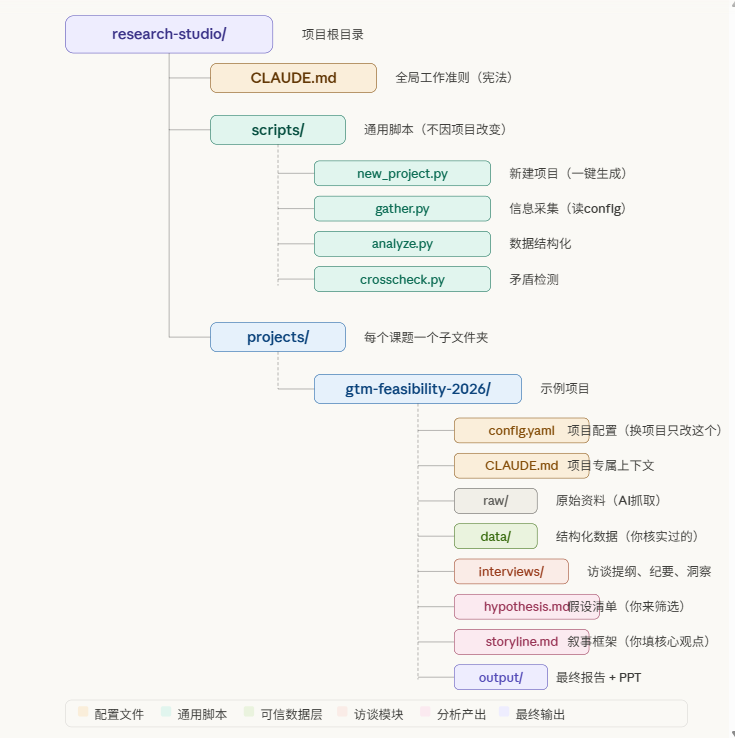

01
信息密度高、重判断力的工作需要把时间从信息处理中解放出来，将注意力留给真正需要人在场的那部分内容
工具没有好坏，只有是否适合使用目的。
也试用了最近很火的 OpenClaw，但评估下来不适合需要稳定输出的专业工作场景，此外有一些隐私方面的考量。
Claude 模型在推理和逻辑分析上的表现，在当前主流大模型中很不错，另外如果你需要对成百上千个本地文件（访谈记录、行业数据、研报）做交叉分析、编写复杂分析脚本、或处理大规模数据集，Claude Code 的上下文管理和自纠错能力能很好应对。加之安全边界清晰，安装门槛相对低。
一句话：如果你的核心需求是消化大量文本、跨文件做关联推理、输出结构化分析——深度行业综述、财务模型、从混乱原始数据中提取洞察——Claude Code 是目前最合适的工具。
03
定义边界比工具更重要——哪些交给 AI，哪些必须自己来
不管用什么 AI 工具，最重要的事不是配置，而是界定边界。
让 AI 做"规则清晰但耗时"的事，把你的时间留给"需要判断力"的事。
04
系统的核心结构
以某 GTM 可行性研究项目为例，完整的文档结构：

CLAUDE.md：相当于一份顶层的工作说明书。它解决的问题是"如何跟你打交道"——你的身份、工作标准、交付规范、术语偏好。
比如你可以在里面写："所有分析必须遵循 MECE 原则"、"PPT 提纲必须包含 So-What"、"数据和结论必须分开呈现"、"有矛盾的信息不能自动取其一，必须标记出来"。
两层 CLAUDE.md 的设计：顶层只放永久不变的内容（你的身份和工作标准），项目文件夹里再放一个项目专属的 CLAUDE.md（这个项目的背景、调研范围、数据来源）。两层叠加，这样换项目时不需要改顶层文件。
config.yaml：项目隔离的关键，每个项目的关键词、信息源、财报路径、调研维度全部写在 config.yaml 里。所有脚本从 config 读取参数。新项目只需要填一个新的 config，脚本逻辑一行不改。
建立可信数据分层（一个放 AI 自动抓取的原始内容，data/ 只放经过你输入可以直接用的数据/报告。）
几个我觉得很重要的规则
Cross-check：同一财务指标如果从不同来源提取出来相差超过 2%，或存在 bn/mn 单位混淆，系统自动标记 ⚠️ 而不是自动取其一。矛盾信息不能消失，必须可见。
数据三档分类：每份分析报告里，数据被分为三档——✅ 可直接引用、⚠️ 需核实后引用、❌ 数据缺口。汇报前你知道哪里需要补，而不是到了客户面前才发现数字站不住。
human_verdict 留空字段：等你填写最终判断。相当于AI 找矛盾，你做裁决。
05
Skill是什么——把你的方法论变成可调取的标准操作
如果说 CLAUDE.md 是宪法，Skill 就是你给这位员工的工作 SOP 手册——针对特定任务，告诉他具体怎么做、用什么框架、输出什么格式。
很多人认为 Skill 是"万能插件"，装了就能做任何事，需要澄清一下。
一个重要前提：Skill 是沉淀出来的。建议先用系统做 2-3 个项目，找到"每次都要重复描述同样逻辑"的地方，再封装。否则容易做出一堆用不上的东西。
自定义方法论型 Skill——才是对顾问真正有价值的。它把你多年积累的分析框架、核查逻辑、交付标准，封装成随时可调取的资产。
对于分析类工作，以下几种类型的任务适合封装成 Skill：
/dd-financial— 你的财务尽调核查清单：必须核实的财务指标、常见数据造假的识别逻辑、数据来源优先级规则。每次尽调一键加载。/competitor-matrix— 你的竞品分析框架：对比维度定义、评分标准、输出格式。做完一个项目，下个项目框架不变，只换内容。/interview-guide— 访谈提纲生成器：结构性必问问题、行业特定追问逻辑、纪要整理模板。输入访谈对象背景，自动生成定制化提纲。/market-sizing— 市场规模测算方法论：TAM/SAM/SOM 拆解逻辑、常用数据源、假设条件的敏感性分析模板。
06